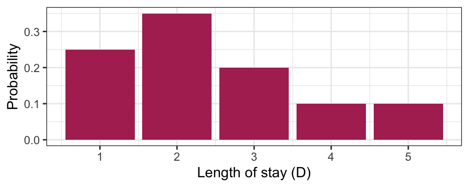
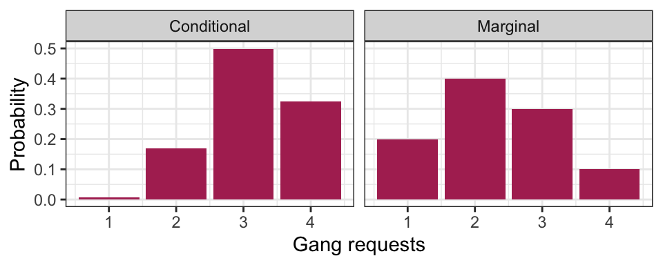
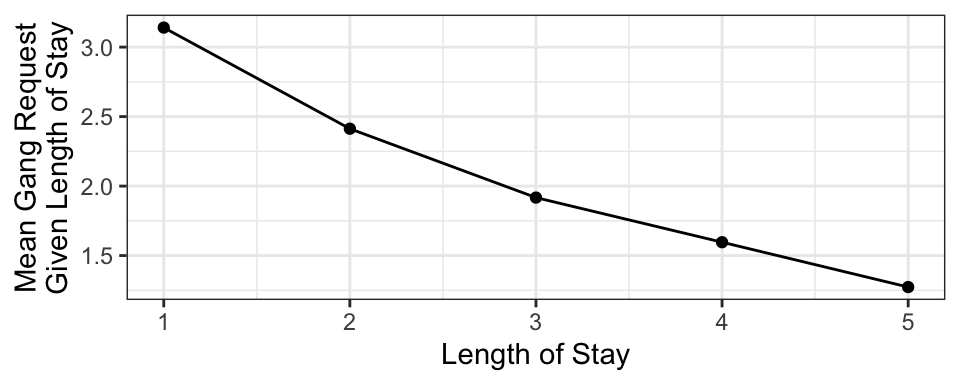
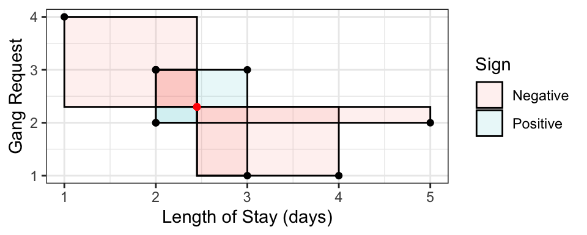
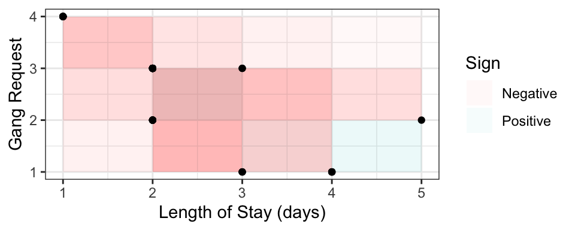
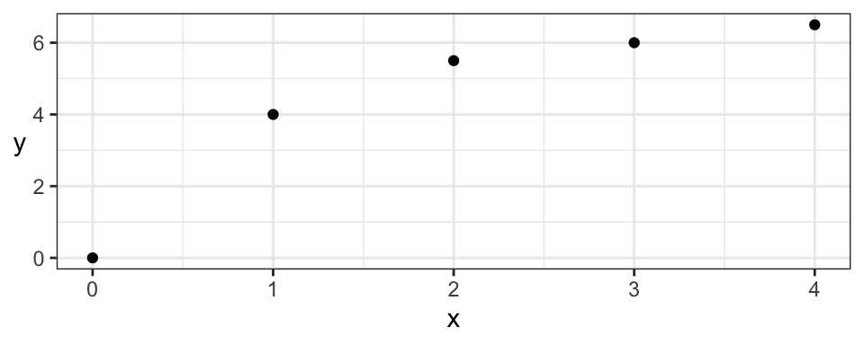
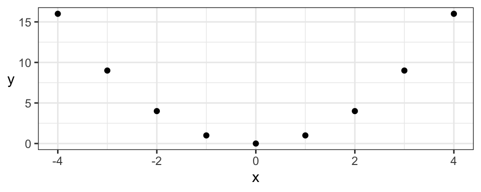
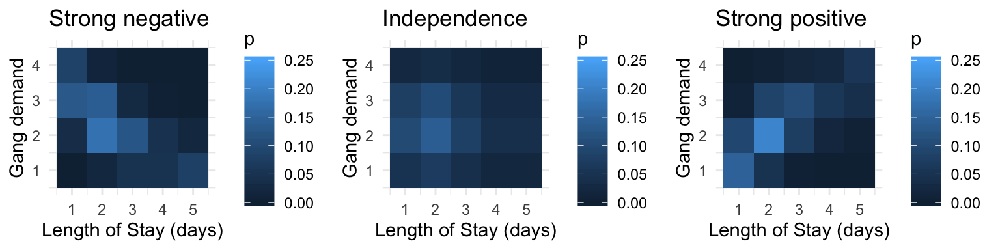
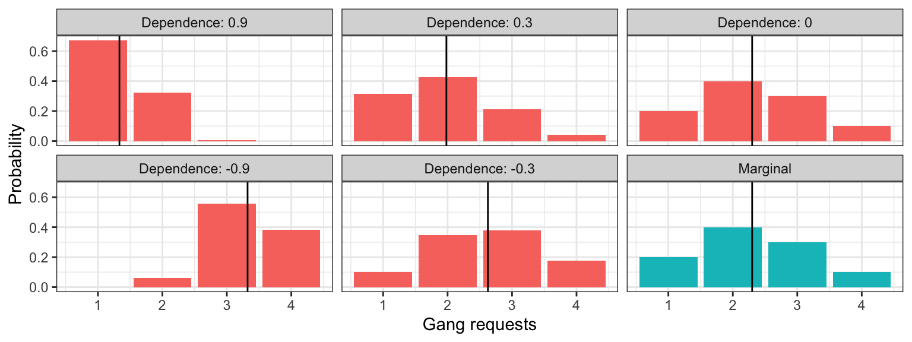
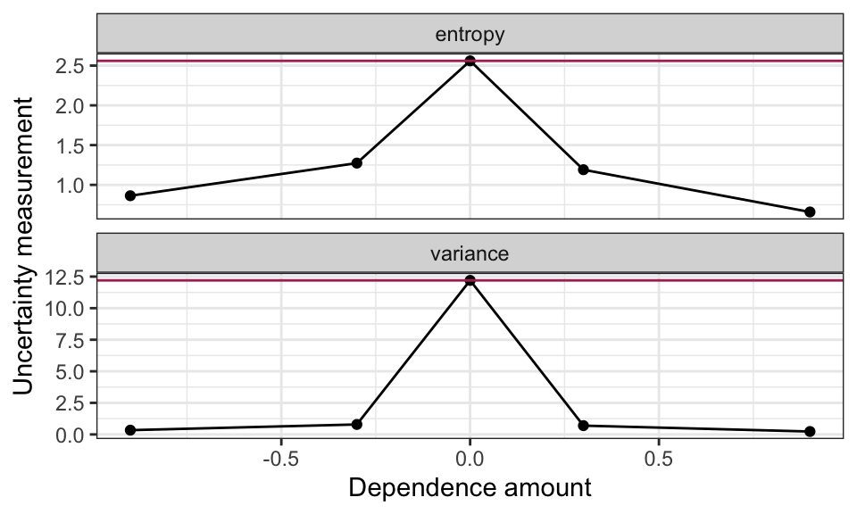

Lecture 4 Joint Probability, Part I
Today’s topic is on working with multiple variables – for now, just two.
Set up the workspace:
suppressPackageStartupMessages(library(tidyverse))
suppressPackageStartupMessages(library(pbivnorm))
suppressPackageStartupMessages(library(cowplot))
suppressPackageStartupMessages(library(DT))
knitr::opts_chunk$set(fig.width = 5, fig.height = 2, fig.align = "center")4.1 Learning Objectives
From today’s class, students are expected to be able to:
- Calculate conditional distributions when giving a full distribution.
- Calculate marginal distributions from a joint distribution.
- Obtain the marginal mean from conditional means and marginal probabilities, using the law of total expectation.
- Use the law of total probability to convert between conditional + marginal distributions, and joint distributions.
- Describe the consequences of independent random variables.
- Calculate and describe the pros and cons of dependence measures: covariance, correlation, and kendall’s tau.
4.2 Conditional Distributions (15 min)
Probability distributions describe an uncertain outcome, but what if we have partial information?
Consider the example of ships arriving at the port of Vancouver again. Each ship will stay at port for a random number of days, which we’ll call the length of stay (LOS) or \(D\), according to the following (made up) distribution:
| Length of Stay (LOS) | Probability |
|---|---|
| 1 | 0.25 |
| 2 | 0.35 |
| 3 | 0.20 |
| 4 | 0.10 |
| 5 | 0.10 |

Suppose a ship has been at port for 2 days now, and it’ll be staying longer. What’s the distribution of length-of-stay now? Using symbols, this is written as \(P(D = d \mid D > 2)\), where the bar “|” reads as “given” or “conditional on”, and this distribution is called a conditional distribution. We can calculate a conditional distribution in two ways: a “table approach” and a “formula approach”.
Table approach:
- Subset the pmf table to only those outcomes that satisfy the condition (\(D > 2\) in this case). You’ll end up with a “sub table”.
- Re-normalize the remaining probabilities so that they add up to 1. You’ll end up with the conditional distribution under that condition.
Formula approach: In general for events \(A\) and \(B\), the conditional probability formula is \[P(A \mid B) = \frac{P(A \cap B)}{P(B)}.\]
For the ship example, the event \(A\) is \(D = d\) (for all possible \(d\)’s), and the event \(B\) is \(D > 2\). Plugging this in, we get \[P(D = d \mid D > 2) = \frac{P(D = d \cap D > 2)}{P(D > 2)} = \frac{P(D = d)}{P(D > 2)} \text{ for } d = 3,4,5.\]
The only real “trick” is the numerator. How did we reduce the convoluted event \(D = d \cap D > 2\) to the simple event \(D = d\) for \(d = 3,4,5\)? The trick is to go through all outcomes and check which ones satisfy the requirement \(D = d \cap D > 2\). This reduces to \(D = d\), as long as \(d = 3,4,5\).
4.3 Joint Distributions (25 min)
So far we’ve only considered one random variable at a time. Its distribution is called univariate because there’s just one variable. But, we very often have more than one random variable.
Let’s start by considering two independent fair coins. The possibilities are: HH, HT, TH, TT, each with probability \(0.25\). We can visualize this as a joint distribution:
| H | T | |
|---|---|---|
| H | 0.25 | 0.25 |
| T | 0.25 | 0.25 |
Note that an outcome consists of a pair of random variables. The sum of all probabilities still add to 1, since this, too, is a probability distribution. We could define the first coin’s outcome as the \(X\) and the second as \(Y\) and write \(P(X=H,Y=H)=0.25\).
Don’t be fooled, though! This is not really any different from what we’ve already seen. We can still write this a univariate distribution with four categories. This is useful to remember when we’re calculating probabilities.
| Outcome | Probability |
|---|---|
HH |
0.25 |
HT |
0.25 |
TH |
0.25 |
TT |
0.25 |
Viewing the distribution as a (2-dimensional) matrix instead of a (1-dimensional) vector turns out to be more useful when determining properties of individual random variables.
4.3.1 Example: Length of Stay vs. Gang Demand
Throughout today’s class, we’ll be working with the following joint distribution of length of stay of a ship, and its gang demand.
| Gangs = 1 | Gangs = 2 | Gangs = 3 | Gangs = 4 | |
|---|---|---|---|---|
| LOS = 1 | 0.0017 | 0.0425 | 0.1247 | 0.0811 |
| LOS = 2 | 0.0266 | 0.1698 | 0.1360 | 0.0176 |
| LOS = 3 | 0.0511 | 0.1156 | 0.0320 | 0.0013 |
| LOS = 4 | 0.0465 | 0.0474 | 0.0059 | 0.0001 |
| LOS = 5 | 0.0740 | 0.0246 | 0.0014 | 0.0000 |
The joint distribution is stored in “tidy format” in an R variable named j:
DT::datatable(j, rownames = FALSE)4.3.2 Marginal Distributions
We’ve just specified a joint distribution of length of stay and gang request. But, we’ve previously specified a distribution for these variables individually. These are not things that can be specified separately:
- If you have a joint distribution, then the distribution of each individual variable follows as a consequence.
- If you have the distribution of each individual variable, you still don’t have enough information to form the joint distribution between the variables.
The distribution of an individual variable is called the marginal distribution (sometimes just “marginal” or “margin”). The word “marginal” is not really needed when we’re talking about a random variable – there’s no difference between the “marginal distribution of length of stay” and the “distribution of length of stay”, we just use the word “marginal” if we want to emphasize the distribution is being considered in isolation from other related variables.
4.3.3 Calculating Marginals from the Joint
There’s no special way of calculating a marginal distribution from a joint distribution. As usual, it just involves adding up the probabilities corresponding to relevant outcomes.
For example, to compute the marginal distribution of length of stay (LOS), we’ll first need to calculate \(P(\text{LOS} = 1)\). Using the joint distribution of length of stay and gang request, the outcomes that satisfy this requirement are the entire first row of the probability table. It follows that the marginal distribution of LOS can be obtained by adding up each row. For the marginal of gang requests, just add up the columns.
Here’s the marginal of LOS (don’t worry about the code, you’ll learn more about this code in DSCI 523 next block). Notice that the distribution of LOS is the same as before!
j %>%
group_by(los) %>%
summarize(p = sum(p)) %>%
knitr::kable(col.names = c("Length of Stay", "Probability"))| Length of Stay | Probability |
|---|---|
| 1 | 0.25 |
| 2 | 0.35 |
| 3 | 0.20 |
| 4 | 0.10 |
| 5 | 0.10 |
Similarly, the distribution of gang request is the same as from last lecture:
j %>%
group_by(gang) %>%
summarize(p = sum(p)) %>%
knitr::kable(col.names = c("Gang request", "Probability"))| Gang request | Probability |
|---|---|
| 1 | 0.2 |
| 2 | 0.4 |
| 3 | 0.3 |
| 4 | 0.1 |
4.3.4 Conditioning on one Variable
What’s usually more interesting than a joint distribution are conditional distributions, when other variables are fixed. This is a special type of conditional distribution and an extremely important type of distribution in data science.
For example, a ship is arriving, and they’ve told you they’ll only be staying for 1 day. What’s the distribution of their gang demand under this information? That is, what is \(P(\text{gang} = g \mid \text{LOS} = 1)\) for all possible \(g\)?
Table approach:
- Isolating the outcomes satisfying the condition (\(\text{LOS} = 1\)), we obtain the first row:
| Gangs: 1 | Gangs: 2 | Gangs: 3 | Gangs: 4 |
|---|---|---|---|
| 0.0017 | 0.0425 | 0.1247 | 0.0811 |
- Now, re-normalize the probabilities so that they add up to 1, by dividing them by their sum, which is 0.25:
| Gangs: 1 | Gangs: 2 | Gangs: 3 | Gangs: 4 |
|---|---|---|---|
| 0.0068 | 0.1701 | 0.4988 | 0.3243 |
Formula Approach: Applying the formula for conditional probabilities, we get \[P(\text{gang} = g \mid \text{LOS} = 1) = \frac{P(\text{gang} = g, \text{LOS} = 1)}{P(\text{LOS} = 1)},\] which is exactly row 1 divided by 0.25.
Here’s a plot of this distribution. For comparison, we’ve also reproduced its marginal distribution.

Interpretation: given information, about length of stay, we get an updated picture of the distribution of gang requests. Useful for decision making!
4.3.5 Law of Total Probability/Expectation
Quite often, we know the conditional distributions, but don’t directly have the marginals. In fact, most of regression and machine learning is about seeking conditional means! (More in DSCI 561/571 +):
For example, suppose you have the following conditional means of gang request given the length of stay of a ship.

This curve is called a model function, and is useful if we want to predict a ship’s daily gang request if we know their length of stay. But what if we don’t know their length of stay, and we want to produce an expected gang request? We can use the marginal mean of gang request!
In general, a marginal mean can be computed from the conditional means and the probabilities of the conditioning variable. The formula, known as the law of total expectation, is \[E(Y) = \sum_x E(Y \mid X = x) P(X = x).\]
Here’s a table that outlines the relevant values:
| Length of Stay (LOS) | E(Gang | LOS) | P(LOS) |
|---|---|---|
| 1 | 3.140580 | 0.25 |
| 2 | 2.412802 | 0.35 |
| 3 | 1.917192 | 0.20 |
| 4 | 1.596041 | 0.10 |
| 5 | 1.273317 | 0.10 |
Multiplying the last two columns together, and summing, gives us the marginal expectation: 2.3.
Also, remember that probabilities are just means, so the result extends to probabilities: \[P(Y = y) = \sum_x P(Y = y \mid X = x) P(X = x)\] This is actually a generalization of the law of total probability we saw before: \(P(Y=y)=\sum_x P(Y = y, X = x)\).
4.3.6 Exercises (10 min)
In pairs, come to a consensus with the following three questions.
Given the conditional means of gang requests, and the marginal probabilities of LOS in the above table, what’s the expected gang requests, given that the ship captain says they won’t be at port any longer than 2 days? In symbols, \[E(\text{Gang} \mid \text{LOS} \leq 2).\]
What’s the probability that a new ship’s total gang demand equals 4? In symbols, \[P(\text{Gang} \times \text{LOS} = 4).\]
What’s the probability that a new ship’s total gang demand equals 4, given that the ship won’t stay any longer than 2 days? In symbols, \[P(\text{Gang} \times \text{LOS} = 4 \mid \text{LOS} \leq 2).\]
4.4 Dependence concepts
A big part of data science is about harvesting the relationship between \(X\) and \(Y\), often called the dependence between \(X\) and \(Y\).
4.4.1 Independence (5 min)
Informally, \(X\) and \(Y\) are independent if knowing something about one tells us nothing about the other.
Formally, the definition of \(X\) and \(Y\) being independent is: \[P(X = x \cap Y = y) = P(X = x) P(Y = y).\]
A bunch of things follow as a consequence of independence. Here are some of them:
- \(P(Y = y \mid X = x) = P(Y = y)\) (and likewise if you switch \(X\) and \(Y\)).
- \(E(Y \mid X = x) = E(Y)\)
- \(E[XY]=E[X]E[Y]\)
Notes:
- if \(X\) and \(Y\) are independent, we don’t actually need the whole table! All we need are the marginals of \(X\) and \(Y\), and we now have the full joint distribution between \(X\) and \(Y\) as just the product of the probabilities.
- independence isn’t some property that you can specify separately from the pmf. The pmf specifes everything about the situation, including whether or not the RVs are independent.
4.4.2 Measures of dependence (15 min)
Next, if two random variables aren’t independent, how can we go about measuring the strength/amount of dependence between two random variables?
4.4.2.1 Covariance and Pearson’s Correlation
Covariance is one common way of measuring dependence between two random variables. The idea is to take the average “signed area” of rectangles constructed between a sampled point and the mean, with the sign being determined by “concordance” relative to the mean:
- Concordant means \(x < \mu_x\) and \(y < \mu_y\), OR \(x > \mu_x\) and \(y > \mu_y\) – gets positive area.
- Discordant means \(x < \mu_x\) and \(y > \mu_y\), OR \(x > \mu_x\) and \(y < \mu_y\) – gets negative area.
Here is a random sample of 10 points, with the 10 rectangles constructed with respect to the mean. Sign is indicated by colour. The covariance is the mean signed area.

Formally, the definition is \[\mathrm{Cov(X, Y)} = E[(X-\mu_X)(Y-\mu_Y)],\] where \(\mu_Y=E(Y)\) and \(\mu_X=E(X)\). This reduces to a more convenient form, \[\text{Cov}(X,Y)=E(XY)-E(X)E(Y)\]
In R, you can calculate the empirical covariance using the cov function:
cov(j_sample$los, j_sample$gang)## [1] -0.7111111In the above example, the boxes are more often negative, so the covariance (and the “direction of dependence”) is negative. For the above example, the larger the LOS, the smaller the gang demand – this inverse relationship is indicative of negative covariance. Other interpretations of the sign:
- Positive covariance indicates that an increase in one variable is associated with an increase in the other variable.
- Zero covariance indicates that there is no linear trend – but this does not necessarily mean that \(X\) and \(Y\) are independent!
It turns out covariance by itself isn’t very interpretable, because it depends on the scale (actually, spread) of \(X\) and \(Y\). For example, multiply \(X\) by 10, and suddenly the box sizes increase by a factor of 10, too, influencing the covariance.
Pearson’s correlation fixes the scale problem by standardizing the distances according to standard deviations \(\sigma_X\) and \(\sigma_Y\), defined as \[\text{Corr}(X, Y) = E\left[ \left(\frac{X-\mu_X}{\sigma_X}\right) \left(\frac{Y-\mu_Y}{\sigma_Y}\right) \right] =\frac{\text{Cov}(X, Y)}{\sqrt{\text{Var}(X)\text{Var}(Y)}}.\] As a result, it turns out that \[-1 \leq \text{Corr}(X, Y) \leq 1.\]
The Pearson’s correlation measures the strength of linear dependence:
- -1 means perfect negative linear relationship between \(X\) and \(Y\).
- 0 means no linear relationship (Note: this does not mean independent!)
- 1 means perfect positive linear relationship.
In R, you can calculate the empirical Pearson’s correlation using the cor function:
cor(j_sample$los, j_sample$gang)## [1] -0.6270894Pearson’s correlation is ubiquitous, and is often what is meant when “correlation” is referred to.
4.4.2.2 Kendall’s tau
Although Pearson’s correlation is ubiquitous, its forced adherance to measuring linear dependence is a big downfall, especially because many relationships between real world variables are not linear.
An improvement is Kendall’s tau (\(\tau_K\)):
- Instead of measuring concordance between each observation \((x, y)\) and the mean \((\mu_x, \mu_y)\), it measures concordance between each pair of observation \((x_i, y_i)\) and \((x_j, y_j)\).
- Instead of averaging the area of the boxes, it averages the amount of concordance and discordance by taking the difference between number of concordant and number of discordant pairs.
Visually plotting the \(10 \choose 2\) boxes for the above sample from the previous section:

The formal definition is \[\frac{\text{Number of concordant pairs} - \text{Number of discordant pairs}}{{n \choose 2}},\] with the “true” Kendall’s tau value obtainined by sending \(n \rightarrow \infty\). Note that several ways have been proposed for dealing with ties, but this doesn’t matter when we’re dealing with continuous variables (Weeks 3 and 4).
In R, the empirical version can be calculated using the cor() function with method = "kendall":
cor(j_sample$los, j_sample$gang, method = "kendall")## [1] -0.579771Like Pearson’s correlation, Kendall’s tau is also between -1 and 1, and also measures strength (and direction) of dependence.
For example, consider the two correlation measures for the following data set. Note that the empirical Pearson’s correlation for the following data is not 1!

| Pearson | Kendall |
|---|---|
| 0.9013 | 1 |
But, Kendall’s tau still only measures the strength of monotonic dependence. This means that patterns like a parabola, which are not monotonically increasing or decreasing, will not be captured by Kendall’s tau either:

| Pearson | Kendall |
|---|---|
| 0 | 0 |
Even though both dependence measures are 0, there’s actually deterministic dependence here (\(X\) determines \(Y\)). But, luckily, there are many monotonic relationships in practice, making Kendall’s tau a very useful measure of dependence.
4.4.3 Variance of a sum (2 min)
Something you ought to know:\[\text{Var}(X + Y) = \text{Var}(X) + \text{Var}(Y) + 2\text{Cov}(X, Y).\]
This means that \(\text{Var}(X + Y) = \text{Var}(X) + \text{Var}(Y)\) if \(X\) and \(Y\) are independent.
Another thing: if \(X\) and \(Y\) are independent, then \(E(XY) = E(X)E(Y)\).
| END OF QUIZ 1 MATERIAL |
4.4.4 Dependence as separate from the marginals (5 min) (Optional)
The amount of monotonic dependence in a joint distribution, as measured by kendall’s tau, has nothing to do with the marginal distributions. To demonstrate, here are joint distributions between LOS and gang demand having the same marginals, but different amounts of dependence.

4.4.5 Dependence as giving us more information (5 min) (Optional)
Let’s return to the computation of the conditional distribution of gang requests given that a ship will only stay at port for one day. Let’s compare the marginal distribution (the case where we know nothing) to the conditional distributions for different levels of dependence (like we saw in the previous section). The means for each distribution are indicated as a vertical line:

What’s of particular importance is comparing the uncertainty in these distributions. Let’s look at how the uncertainty measurements compare between marginal and conditional distributions (marginal measurements indicated as horizontal line):

Moral of the story: more dependence (in either direction) gives us more certainty in the conditional distributions! This makes intuitive sense, because the more related \(X\) and \(Y\) are, the more that knowing what \(X\) is will inform what \(Y\) is.